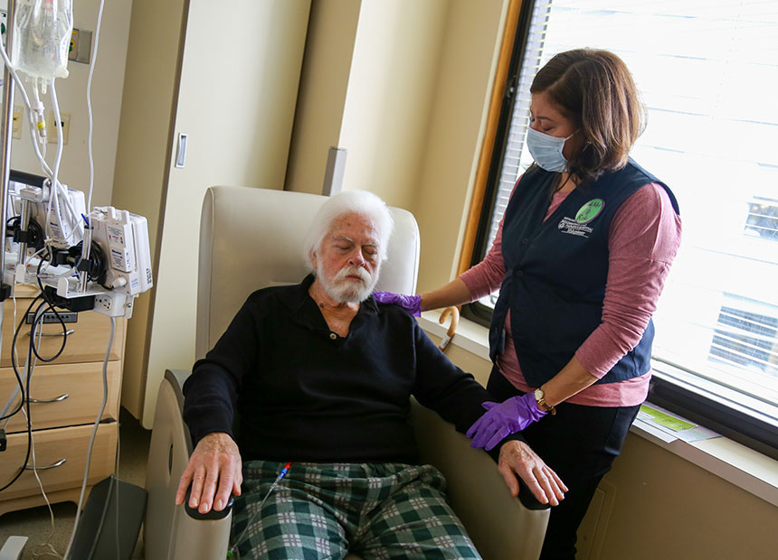

Nuestro origen
6 de Octubre 2021. Buenos Aires, Argentina
Mistica nace de la necesidad de conectar con algo que siempre me llamo, pero nunca habia ocupado un lugar de prioridad en mi vida. Hablar de astrologia, de Reiki, del universo y las energias, me hacia muy feliz. Lo disfrute desde siempre, de manera innata. Sin embargo nunca me habia permitido verlo como algo a lo que pudiera dedicarme. Despues de forzarme a estudiar carreras universitarias que no me hacian feliz, decidi darle una oportunidad a este mundo. Fue asi como entonces me inscribi a mi primer curso de tarot profesional, el cual fue el primer paso para darme cuenta de que queria poner toda mi energia aca. Luego me inicie en Reiki. Junto con mi maravillosa maestra Ana Laura Clavijo, me enamore de estas terapias holisticas... el resto... es historia. (De la buena)
